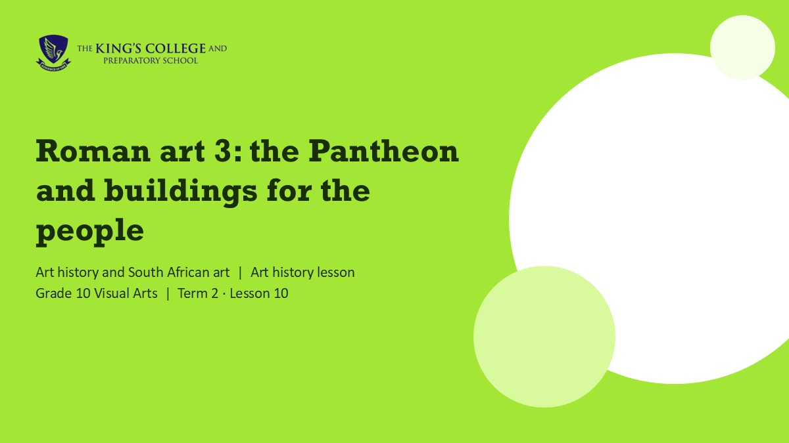

Term 2 · Lesson 10 · Art history lesson
Roman Art 3: The Pantheon and Buildings for the People
Start Here
Today I Will
- Describe the plan, dome and oculus of the Pantheon
- Explain what the building meant to the Romans
- Explain how public buildings served the people and the emperor
Imagine standing in a round room with a hole in the roof and no windows. What happens when it rains, and what happens as the sun moves?
Words to Know
| Word | Meaning |
|---|---|
| Pantheon | A temple to 'all the gods' in Rome, rebuilt under Hadrian in about 118–125 CE, now a church. |
| Oculus | A round opening, here at the top of the dome, about 9 m wide. |
| Coffering | Rows of sunken square panels in a ceiling that reduce weight and decorate it. |
| Amphitheatre | An oval or round open-air arena surrounded by rising seats, like the Colosseum. |
| Aqueduct | A channel, often carried on arches, that brings water over long distances using a gentle slope. |
Slides

Videos
Notes
The Pantheon in depth; the Colosseum, aqueducts, baths and forums as buildings for the people.
The Pantheon in Depth
- Two parts: A porch with Corinthian columns and a pediment like a Greek temple, joined to a vast round hall (the rotunda).
- The dome: A concrete dome about 43 m across; the height to the top equals the diameter, so a sphere would fit inside.
- Lighter at the top: The concrete gets lighter higher up, with pumice mixed in, and the dome becomes thinner.
- Coffers: Rings of sunken squares reduce the weight and lead the eye up towards the centre.
- The oculus: The only light source. A disc of sunlight travels across the interior, suggesting the heavens.
- Survival: Since 609 CE it has been a Christian church, one reason it is so well preserved.
Buildings for the People
| Building | What it gave the people (and the emperor) |
|---|---|
| Colosseum (c. 70–80 CE) | Spectacles for about 50 000 people, showing the emperor's generosity and keeping the crowd loyal. |
| Aqueducts, e.g. Pont du Gard (1st century CE) | Clean water over long distances; the tiers of arches show practical skill and rhythm. |
| Baths of Caracalla (212–216 CE) | Hot, warm and cold rooms, libraries and gardens under huge groin vaults. |
| Forums | Public squares for trade, law and religion, surrounded by temples, basilicas and statues. |
Rome built for the gods and for the crowd, and both buildings sang the emperor's praises.
Practical
You need: History booklet, VJ, plan and section image
Analysing the Pantheon
- Describe: name, date (c. 118–125 CE), materials, location and the two parts of the building.
- Draw a quick plan and section in your VJ and label the porch, rotunda, dome, coffers and oculus.
- Analyse: explain how shape, light and repetition (the coffers) create the effect of the interior.
- Interpret: what might the sphere and the moving disc of light have meant to a Roman visitor?
- Opinion: why do you think architects still copy the Pantheon today? Give one example if you know one.
Test Yourself
- Identify the opening at the top of the Pantheon's dome and explain its two functions.
- Explain why the Pantheon's dome did not collapse under its own weight.
- Compare the purpose of the Pantheon with that of the Colosseum.
Show answers
1. The oculus: it is the only source of light and it symbolises the heavens (it also reduces weight at the top). 2. Lighter concrete with pumice near the top, a thinner shell higher up and coffers that remove weight. 3. The Pantheon was a temple expressing order and the heavens; the Colosseum was for public entertainment that showed the emperor's generosity.
Finished Early?
Show the Pantheon's clever geometry in one quick drawing.
- Draw a square with a circle that just fits inside it: this is the rotunda's section.
- Cut the top half of the circle into a dome and add a small gap at the top for the oculus.
- Add a porch with columns and a triangular pediment on one side.
- Label the oculus, coffers, porch and rotunda, and note why the dome gets thinner near the top.